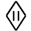
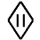

|
Rim's TruthThe set of items which include the sword Rim's Truth were made by the magesmith Dwynen of Aiden, about 100 years ago. She was a famous female warrior-smith, who made many other items. Recent HistoryThe last person to hold all three items was Cerodorn the Butcher, a warrior-thegn who lived in Northwood during the previous century. He was a infamous warrior, noted for his refusal to ever accept a surrender. The shield, Strong Arm, was lost in the Troll Watch while Cerodorn was hunting trolls. It has not been seen since, and is believed destroyed. On Ceredorn's death, the hauberk was passed to his son, Cadwallon, and the sword passed to his nephew, the necromancer-warrior Halgorn. Of Cadwallon, there is little to say. He died a peaceful death, and the armour went to his son Madog, who is currently thegn at Abbyton. The tale of Halgorn the Necromancer is somewhat more interesting. He hired himself out as a mercenary to many men, and obtained for himself an exceedingly good reputation. He took service with the thegn Renbric of Rorn's Vale, and helped him in a blood feud against a neighbour. When the work was done, Renbric refused to pay him, since he was not a true warrior, and therefore not worthy of the money. An argument ensued, and Renbric was slain. Halgorn went on the run, only to return when he was promised a trial which would favour him. Not trusting him, Halgorn was immediately imprisoned and sentenced to death on his return. He escaped however, and sought vengeance against the family. Raising an undead army, Halgorn layed waste to the family's lands, but was defeated by Renbric's son, Guthred. Halgorn again escaped, and later returned to finish the job by stealth, murdering the family in their beds. The bodies of Guthred and his younger sister were never found, and Halgorn was not seen again. Rim's Truth

 

Believed lots when Halgorn the Necromancer went into hiding, it has recently been found by a warrior-bard, Hengest. Blade Turn
Currently it is thought to be held by Madog of Abbyton, though it has not been seen for many years, so it may have been passed on, or lost. Strong Arm

Believed to have been lost to trolls in the Troll Watch by Cerodorn the Butcher. |
|
This page is maintained by
Samuel Penn.
Last updated on 27th March, 2001. |


|